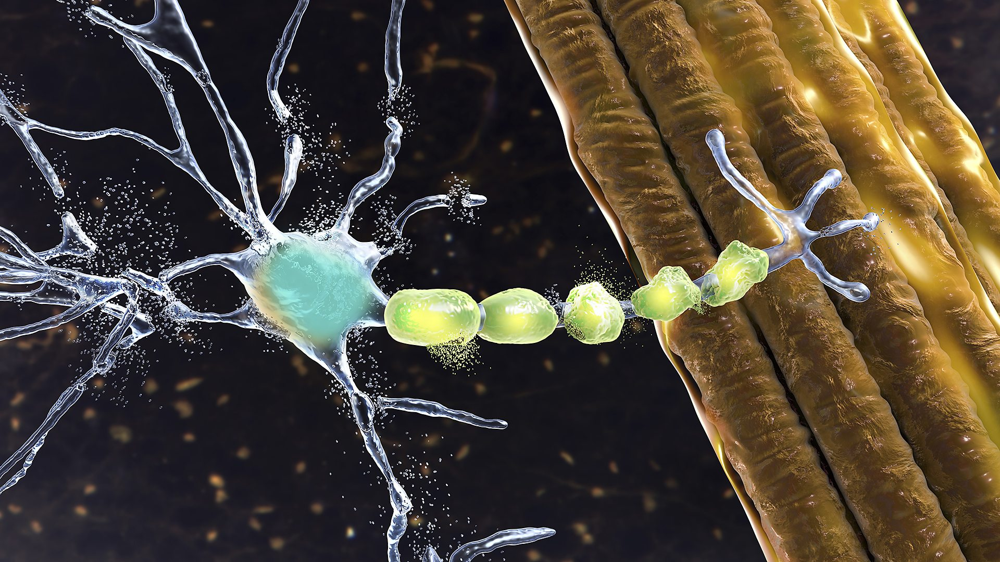

April 11

Actor Kenneth Mitchell discovered he had ALS around five and half years before he died in February 2024 (Credit: Getty Images)
After five and a half years of living with amyotrophic lateral sclerosis (ALS), actor Kenneth Mitchell – who appeared in the films Star Trek: Discovery and Captain Marvel – died on 24 February 2024. In the months leading up to his death, he had described on social media what it was like living with the disease, which is also known as Lou Gehrig disease after the American baseball player who was diagnosed with the condition in 1939.
"At the heart of it all are friends and family, caregivers and doctors coming to the aid of my family over and over and over again. Giving a plethora of support and love and care and encouragement. There is so much beauty in that. This disease is absolutely horrific."
~Kenneth Mitchell
Scientists are racing to find out what causes this progressive disease. And they're starting to make some headway
"It's been a long five years," wrote Mitchell in an Instagram post in August 2023. "So much lost, so much gained. Incredibly hard times, mixed with so many more blessings. At the heart of it all are friends and family, caregivers and doctors coming to the aid of my family over and over and over again. Giving a plethora of support and love and care and encouragement. There is so much beauty in that. This disease is absolutely horrific."
His death came just a few months after news that photographer Bryan Randall had died in August 2023, who had been diagnosed with ALS three years earlier at the age of 54. He was the partner of the actress Sandra Bullock, who met him on the job while he was taking portraits at a family party. In April 2025, American actor Eric Dane – who starred in Euphoria and Grey's Anatomy – revealed at the age of 52 that he had also been diagnosed with ALS.
Despite claiming numerous high-profile victims over the years – including young, otherwise healthy people – the mystery of what causes ALS remains. However, recent research has uncovered some clues. Could we finally be on track to decoding this devastating condition?
ALS is a form of motor-neurone disease (MND). It is a debilitating and painful condition in which the motor neurons – cells that control voluntary muscle movement – are gradually lost, leading to people slowly losing control of their bodies. A recent review of the available data estimated that it affects somewhere around five people per 100,000 in the US.
The disease occurs more commonly in men and the average age of diagnosis is about 60 years old, though it can also affect people who are significantly younger. While most people live only a few years after the diagnosis, there are notable exceptions, including the physicist Stephen Hawking who was diagnosed with a form of MND at 21 and died in 2018 at the age of 76.
ALS affects the nerve cells that control voluntary muscle movement, known as motor neurones (Credit: Getty Images)
The reasons why people develop ALS are complicated. For 10-15% of people with the condition, it runs in the family. In these cases, a mutation in a particular gene would have been passed through the generations. It is not certain that if one of your parents or ancestors had ALS, you will develop it as well, although there may be stories about cousin Lucy or grandpa Joe having a wasting illness in the family folklore.
However, it turns out that when people do develop the inherited form of ALS, the affected gene is not always the same one, even though the consequences are the same.
All information included in the timeline above can be found at the Pharmaceutical Technology website.
For the other 85% of people who develop ALS, identifying the cause is even less straightforward. When no-one says "your great uncle had something like that" after someone gets a diagnosis for ALS, then it is considered to be a random, one off, event and is called a "sporadic" case. Recent research has suggested that genetic mutations might be part of the story. However, these probably involve little changes in a few different genes rather the single drastic, obvious biological mistakes noted for familial ALS. Changes in up to 40 genes have been implicated in increasing someone's risk for sporadic ALS, though the condition is extremely rare.
Depending on the type of ALS, "the extent that disease can be explained by genetic factors is only about 8% to 60%," explains Eva Feldman, a professor of neurology at the University of Michigan.
However, there's also emerging evidence that repeated and prolonged exposure to potential triggers in the external environment might increase the risk of someone developing ALS, particularly the sporadic form. This led Feldman and her colleagues to investigate.
"We suspected the presence of what we term the ALS 'exposome', which is the sum of toxic environmental exposures that increase risk," says Feldman. The team have found that prolonged exposure to organic chemical pollutants, metals, pesticides, particulate matter in dust from construction work and poor air quality could contribute to increasing a person's ALS risk.
Neil Thakur, chief mission officer of the ALS Association, says there is not a complete cause and effect for ALS. "It is always a combination of factors," he says. "Even if you have a risk factor or the genetic profile, it is not 100% sure you will get ALS."
But there is some evidence that exposure to particulates from diesel fuel, aviation fuel, particulates from burn pits, pesticides and aerosols may increase someone's risk of developing ALS, he adds. Military personnel, for example, are highly exposed to these and seem to have an increased chance of contracting the disease, he says.
There's also evidence that having lead in your drinking water, smoking and contact sports might trigger ALS. Still, there remains a lot of uncertainty. Studies assessing the effect of alcohol intake and cigarette smoking over a lifetime before an ALS diagnosis suggest being a teetotal non-smoker does not necessarily protect you. (These factors do reduce a person's risk of developing many other conditions, of course – so there are plenty of other reasons to limit your drinking and smoking.)
One of the challenges that scientists and clinicians investigating the causes of ALS (and MND overall) face is that they are, thankfully, rare diseases. Within the small number of patients, not everyone is willing or able to take part in research studies. And there are many differences in genetics and lifestyle that could be influencing the results. Even if a genetic change is found in 4% of cases, for example, there might not be enough people in that group to see a clear difference between those who have been exposed to a specific chemical pollutant and those who have not.
"It takes a long time to fully recruit enough people onto an ALS clinical trial, because the disease progresses so rapidly and people are only eligible early in the disease," says Thakur. "If you do have ALS in your family and you have an ALS gene, you can explore whether you could participate in trials, which would help you and others."
Feldman also says that her team's research looking at the combined risk from genetic and environmental factors "is a challenge" because they suspect that multiple genes – tens and possibly even hundreds – contribute to what they term the "polygenic risk profile" in ALS. This risk profile comes "in addition to traditional risk from single genes", she says. The team is now investigating how this polygenic risk profile might interact with environmental factors to cause ALS.
At the moment, ALS can't be cured. But the Food and Drug Administration has approved several treatments which can help to slow the speed of its progression and give people a little more time. These drugs have a range of mechanisms, ranging from reducing the levels of certain chemicals around the brain and spinal cord to preventing nerve cell death.
There also seems to be the possibility that targeting treatments against the effects of a particular faulty gene could be useful. A recent early trial of a drug designed to counteract the damage done by the SOD1 mutation produced some promising preliminary results, for example.
Knowing which genetic mutations might have been responsible for a person's diagnosis of ALS may not be particularly comforting to someone currently experiencing it. The focus of the ALS Association is to provide support and guidance for people with the condition and their families.
"The ALS Association strategy is to make it liveable until we have a cure," says Thakur. The organisation advocates for high quality care involving healthcare professionals from a range of different backgrounds, which can allow someone to have a more active life for a few months longer, he says. The association also plans to release guidance on how to reduce risk from potential contributors to the development of ALS, he says.
The challenge, however, is funding for appropriate research. As well as working out how much of a contribution each gene or environmental factor might make, more studies are needed on how to apply any knowledge gained. "The real question is not why do people get ALS, but what can we do to prevent it or treat it?" says Thakur.
Regardless of the cause, the march of this progressive disease will continue. Family and friends will have to respond to each new level of deterioration with love and patience, as Sandra Bullock has done. However, a better understanding of the science behind this devastating condition will hopefully lead to more effective treatments and, one day, may even help to prevent new cases emerging. And that is always welcome.
* This article was originally published 27 August 2023. It was updated on 26 February 2024 to include details of Kenneth Mitchell's death and updated again on 11 April 2025 to include details of Eric Dane's diagnosis.